RDMA over Ethernet for Distributed AI Training at Meta Scale
面對 AI collective 的低 flow entropy、同步 burst 與 400G 級 scale-out，Meta 以獨立 RoCEv2 backend fabric、GPU–NIC 1:1/Clos AI Zone、QP-aware E-ECMP 或集中式 TE、receiver-driven admission 及 network–collective co-tuning 組成可營運的訓練網路；受控測試顯示 QP scaling + E-ECMP 對 AllReduce 最高提升 40%，TE 在 128-GPU collective 再優於 E-ECMP 5–10%，但這些是不同測試中的局部結果，並非單一端到端加速倍率。§4.2 · PDF p.6 · Fig. 7§4.4 · PDF p.7 · Fig. 10
文章目錄
Collective、Rail、Clos 與 ECMP：先看流量從哪裡來
只需先懂六件事
- RDMA / RoCEv2
- Remote Direct Memory Access 讓 NIC 直接搬運 application/GPU memory，避開兩端 kernel copy。RoCEv2 將 RDMA verbs message 封裝成 Ethernet/IPv6/UDP，由 RNIC 處理。後文 routing hash、QP 與 lossless queue 都建立在此封裝上。
- Collective
- AllReduce、AllGather、ReduceScatter、AlltoAll(v) 把多 GPU 同步拆成 point-to-point RDMA writes。慢一條 flow 會延長整個 collective completion time（CCT）。
- Queue Pair（QP）
- RDMA 端點上的傳輸佇列。NCCL 一個 GPU pair 可用多 channels、NIC pair 可用多 QPs；增加 QP 並讓 switch hash QP field，可增加路徑 entropy。
- Rail
- 本文硬體每台 Grand Teton 有 8 GPUs、8 RDMA NICs，呈 1:1 映射並以 8×400G 連 backend；可把同一 GPU/NIC index 的平行 lane 理解為 rail。論文也在 co-tuning 中使用 Rail-based AlltoAll，但沒有完整定義其演算法。
- Clos / oversubscription
- RTSW leaf 連主機，CTSW spine 連 rack；跨 AI Zone 再經 ATSW。單一 Zone 設計為 non-blocking，跨 Zone 則刻意 oversubscribe，所以 job placement/rank assignment 會改變可用 bisection bandwidth。
- PFC / ECN / DCQCN
- Priority Flow Control（PFC）逐 hop pause lossless queue；ECN 在壅塞時標記 packet；DCQCN 由 receiver 回 CNP，sender 再降速。PFC 防丟包但傳播會造成 head-of-line blocking，DCQCN 則要在 CCT 與 queue/PFC 間調參。
§2.1–2.2 · PDF p.2§3.1–3.2 · PDF p.4 · Figs. 4–5§5.1–5.2 · PDF p.8
{kind=link}
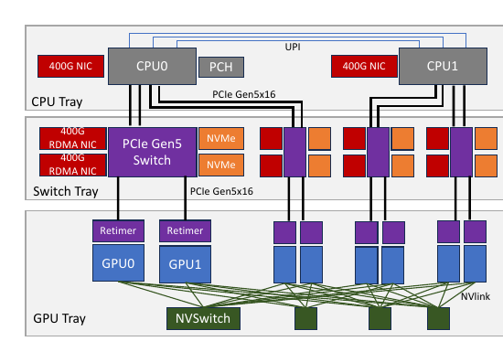
Collective 決定 traffic，而不是只決定 API 名稱
| Collective | 常見用途 | Traffic / congestion | NIC message | 每 NIC entropy | Topology 需求 |
|---|---|---|---|---|---|
| AlltoAll(v) | Embedding distribution | Full mesh、可能 N-to-N incast | 128 KB | \(\log(MN)\) | Full bisection bandwidth |
| AllReduce | DDP | Tree 或 Ring；Tree 可能 2-to-1 incast | 512 KB | \(\log(M)\) | 可容忍 oversubscription |
| AllGather | FSDP | Ring、1-to-1，較低 congestion | 512 KB | \(\log(M)\) | 可容忍 oversubscription |
| ReduceScatter | FSDP | Ring、1-to-1，較低 congestion | 512 KB | \(\log(M)\) | 可容忍 oversubscription |
分析 這張表解釋後續為何不能只選一套「最佳 RoCE 設定」：AlltoAll 的 full mesh entropy 較高但 microburst 強；hierarchical AllReduce 的 flow 少，容易 hash collision。Routing 解「落在哪條 path」，receiver admission 解「同時能注入多少」，兩者控制不同。
{kind=link}
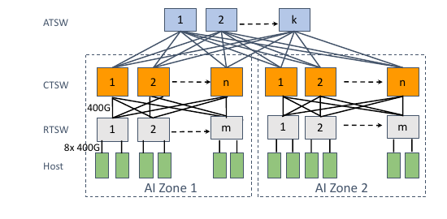
有了這些背景，下一個問題是：低熵大象流、持續碰撞與 Incast 如何擊穿預設乙太網。
低熵大象流、持續碰撞與 Incast 如何擊穿預設乙太網
症狀 → 根因 → 最近解法的缺口
- 症狀：collective 的 BusBW/CCT 在相同總容量下仍波動；少數 link 過載會讓同步 gang 全體等待。
- 根因 A——空間不均：訓練 job 專占 GPU、logical topology 稀疏，UDP 5-tuple 重複；ECMP 的隨機 hash 樣本太少，elephant flows 持續撞同一 uplink。作者以 16 links/1,000 flows simulation 得到平均 Max-Mean Ratio（MMR）>1.2；真實 Table 2 的 AllReduce 只有平均 4 QPs/GPU。§4.1.1 · PDF p.5
- 根因 B——時間突發：即使 path 完美均衡，collective 仍在毫秒尺度 on/off；AlltoAll 或 incast 可同時把 line-rate traffic 壓向 receiver，形成 ephemeral queue/PFC。§2.4 · PDF p.4 · Fig. 3
- 根因 C——跨層假設不合：out-of-box NCCL 假設 <10 µs RTT、adaptive routing、無 oversubscription；Meta production unloaded RTT 約 22 µs，且跨 Zone oversubscribed，控制訊息與小 message 的最佳選擇因此改變。§6.1 · PDF p.10 · Fig. 15
- 根因 D——營運狀態會變：link failure、job fragmentation、switch image、NIC/firmware 與新 GPU I/O 需求共同改變流量；靜態模型無法涵蓋所有交互作用。§6.4 · PDF p.12
{kind=link}
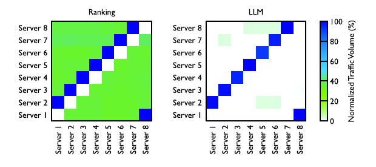
為什麼最近的單點方案不夠
| 方案 | 能解什麼 | 在本文環境的缺口 |
|---|---|---|
| 5-tuple ECMP | 無狀態地分散大量獨立 flows | low entropy 時碰撞機率高，且是 probabilistic；不理解 job demand |
| Path pinning | 滿 rack、無故障時可確定地分路 | fragmented placement 與 failure reassignment 破壞平衡，曾使 training performance 降逾 30% |
| 單純加 2× uplink | 以容量掩蓋 collision | 快速但昂貴；Stage 2 投入 2× network infrastructure |
| Central TE | 用實際 demand、topology 做 CSPF，可逼近 roofline | 多 link failures 時可能輸 E-ECMP；控制面與 DC-scale path diversity 成本高 |
| DCQCN | 由 ECN/CNP 對 flow 反應式降速 | 緊 threshold 傷 CCT；放鬆調參只小幅改善 CCT 卻增加 PFC，400G firmware 還有可見性／bug 問題 |
§4.1 · PDF p.5§4.4 · PDF p.7§5.2.1 · PDF p.8§5.2.1 · PDF p.9
由此推導的需求
| 需求 | 成功條件 | 對應機制 |
|---|---|---|
| R1：隔離並獨立演進訓練流量 | checkpoint/ingestion 不干擾 collective，400G 世代可獨立升級 | Frontend / Backend physical separation |
| R2：使 physical topology 配合 logical collective | 減少跨 oversubscribed Zone 的 cut traffic | GPU–NIC 1:1、AI Zone Clos、topology-aware placement/rank assignment |
| R3：消除 persistent path collision | link utilization 均衡、接近 roofline，故障仍有 fallback | QP scaling + E-ECMP；部分 Zone 用 TE + BGP/E-ECMP backup |
| R4：控制 ephemeral microburst | receiver 來得及消耗，PFC 不向上游持續傳播 | receiver CTS admission、channel buffers、高優先 CTS、deep CTSW buffer |
| R5：共同最佳化 network 與 collective | production RTT/oversubscription 下仍有高 BusBW | message size、channel、protocol/topology、QoS、switch credit co-tuning |
| R6：故障可診斷、可回退 | 快速把慢 job 對應到 fabric/NIC/QP 狀態 | OOS、link flap、LAT、PFC watchdog、buffer alarms、reachability 與 baseline |
本節只比較論文自己定位的工作；沒有用外部論文補入本文未做的數值。比較重點不是「哪個 protocol 名字最好」，而是控制點是否看得到 AI collective 的結構。
| 路線 | 既有工作關注 | 本文的差異 | 證據邊界 |
|---|---|---|---|
| Storage-oriented RoCE deployment / DCQCN | 以 PFC、ECN、CNP 與 sender rate control 維持 lossless RDMA | AI collective 同步、低 entropy 且有 receiver semantics；Meta 把 admission window 上移到 NCCL，再以 PFC/deep buffer 接住短暫 burst | 本文沒有同平台重做 storage workload，也未證明 DCQCN 對所有 AI workload 都不合適 |
| InfiniBand 與 proprietary AI fabric | 專用高效能互連與整合式 routing/transport | 本文選 RoCEv2，重用 Ethernet 生態並以 scheduler、switch、RNIC、collective library 補上跨層控制 | 沒有 InfiniBand 或其他 fabric 的 controlled performance／cost comparison |
| HPCC 等 transport congestion control | 利用更細緻的 telemetry 或 feedback 調整 sender rate | 本文判斷同步 collective 的 transient burst 可在應用層先限制 inflight data，減少 transport reaction 的負擔 | 只實測 DCQCN 參數；未與其他 congestion-control algorithms 對照 |
| ECMP、flowlet 與 centralized TE | 從無狀態 hashing 到依 demand／burst 動態分流 | 本文同時部署 QP-aware E-ECMP 與 TE，依故障率、scale 與控制面成本選擇；flowlet 仍在初期驗證 | 沒有一個統一 policy 在所有 failure/load 狀態下直接比較三者 |
| Topology/parallelism co-design | 共同最佳化 model parallelism、collective 與實體拓撲 | 保留標準 Clos，以 AI Zone、rail/rank placement、minimum-cut scheduling 與 NCCL algorithm/protocol threshold 適配真實 fabric | paper 不提出新的 topology synthesis，也未量化與客製拓撲的差距 |
| Collective compiler / parameter-server optimization | 生成或優化 collective schedule、分片與通訊次序 | 本文把 collective engine 視為 network admission controller，並共同調整 CTS/ACK QoS、channel buffer、VOQ credit 與 protocol switch point | 沒有與 TACCL、MSCCLang、BytePS 等在同一 cluster 的 head-to-head evaluation |
§7 Related Work · PDF p.12§5.1–5.2 · PDF p.8§5.3–6.1 · PDF p.10
分析 本文最獨特的比較軸不是 Ethernet 對另一種 fabric，而是誰擁有 traffic semantics：ECMP 只見 packet/flow，TE 見 topology 與 demand，NCCL 還知道 receiver readiness 與 collective phase。越接近 semantics 的控制越能預防同步 incast，但越依賴單一 software stack 與運維整合。
問題的限制已經清楚；接著要抓住作者最關鍵的轉念。
Meta 如何把 RoCE 從 AI Zone 推到資料中心規模
可觀察症狀
collective completion time 不穩、link utilization 偏斜；即使總容量足夠，少數 path collision 或同步 incast 仍拖慢整個 gang。
兩個根因
低 5-tuple entropy 造成持續性 hash collision；collective 的 on/off burst 造成瞬時 queue buildup。兩者需不同控制位置。
跨層答案
Topology/job placement 減少跨 zone 流量；routing 分散長流；collective admission 限制 in-flight bytes；operations 以 OOS/PFC/LAT 找故障。
論文性質
多年生產演進與 case study，證據混合 trace、simulation、microbenchmark、production observation；不是單一新演算法的封閉評測。
Meta 的核心洞見是：訓練 traffic 並不像典型資料中心的大量短 flow。GPU gang 週期性地同時做 collective，少量大 flow 可達 NIC line rate；一條慢路徑會讓所有 rank 等待。因此「平均總頻寬」不足以保證訓練效率，必須把 logical collective topology、physical rail/fabric、routing hash 與 receiver readiness 一起設計。§2.3–2.4 · PDF p.3 · Tables 1–2§2.4–3 · PDF p.4 · Figs. 3–5
實驗事實 在 controlled 128-GPU NCCL benchmark、16 uplinks 下，E-ECMP 的 link utilization 分散在 40–90%，TE 約一致地使用 80%；Figure 10 的 AllReduce／AlltoAll BusBW 顯示 TE 高 5–10%。在另一個 400G、16:1 incast、各跑五分鐘的測試中，streaming Perftest 產生 350K/s 與 183K/s 的兩段 PFC，Gather + receiver admission 則兩段皆為 0。§4.4.2 · PDF p.7 · Fig. 10§5.2.2 · PDF p.9 · Table 3
作者主張 作者報告已把 RoCE 從 prototype 擴展到多個、每個容納數千 GPU 的 production clusters，先前公開設計可達 32,000 GPUs；另舉 Llama 3 大型變體在 24,000-GPU RoCE cluster 中使用 16,000 GPUs。這些數字證明部署規模，但本論文沒有對 16K/32K job 做端到端 controlled experiment。§1 · PDF p.2§2.3 · PDF p.3
分析 最可泛化的成果不是「關掉 DCQCN」這個表面操作，而是先辨識 congestion 是空間上的 path imbalance 還是時間上的 admission burst，再把控制放到能看見正確訊號的層。Meta 的 PFC-only transport 仍依賴 dedicated fabric、deep-buffer spine、receiver-gated NCCL 與細緻營運監控，不能拆開套用。
直覺成立後，再沿著一次完整執行看它如何落成系統。
從 QP 增熵、Demand-aware TE 到 Receiver-driven Admission
先走完一個跨節點 collective chunk
- Placement / rank assignment：job scheduler 先知道 server 在 GPU logical topology 與 AI Zones 的位置；若跨 Zone，盡量找較小的 cut，讓較少 collective traffic 穿越 oversubscribed ATSW layer。
- 準備資料：sender GPU thread 從 compute buffer 複製 chunk 到可用的 channel buffer。每 GPU 對應一張 RNIC；同 host 的 8 GPUs 先由 NVSwitch scale-up，跨 host 才走各自的 400G rail。
- Receiver 授權：receiver CPU proxy 只有在 channel buffer 可用時才送 clear-to-send（CTS），內容帶 size 與 memory information；sender proxy 收到後才 post RDMA write。這把 in-flight traffic 上限綁到 receiver 的可用 channels。
- 選路：DC-scale 主要由 E-ECMP 將 destination QP field 加入 hash；部分 ranking AI Zones 由中央 TE 依 topology、job placement、flow counters 每約 30 s 算 CSPF，寫入 RTSW Exact Match table。BGP/default route 保留為 fallback。
- 穿越 fabric：RoCEv2 packet 經 RTSW→CTSW，在跨 Zone 時再經 ATSW。單一 lossless queue 用 DSCP-based PFC 防丟包；deep-buffer CTSW 以 per-port ingress carve 吸收短暫 burst。
- 完成與回授：receiver RNIC 將資料 DMA 到 channel buffer，GPU 再 copy 到 compute buffer；兩端 proxy recycle buffer，receiver 才發下一個 CTS。OOS、PFC pause、link flap、LAT 與 collective instrumentation 進入診斷工具。
§3.3 · PDF p.5 · Fig. 6§4.2–4.3 · PDF p.6 · Figs. 7–9§5.2.2–5.2.3 · PDF p.9 · Fig. 14§6.3 · PDF p.11
元件 A：node rails、AI Zone 與 DC-scale fabric
Grand Teton 將 8 GPUs、8 RDMA NICs 做 1:1 mapping；GPU 之間在 node 內由 NVSwitch 相連，GPUDirect 使跨 node traffic 繞過 host memory。每個 rack 的 RTSW leaf 以 copper DAC 連 host，CTSW spine 以 400G optics 組成 two-stage Clos AI Zone。Zone 內主張為 non-blocking；ATSW 把多 Zone 擴成 datacenter-scale，但 cross-Zone 刻意 oversubscribe。因此 rail/topology 不只是 cabling：rank placement 會決定 collective 的哪一維跨越哪一層。§3.1–3.2 · PDF p.4 · Figs. 4–5§3.3 · PDF p.5 · Fig. 6
元件 B：由 hash 增熵，到 demand-aware routing
| 階段 | 訊號 → 決策 → 動作 | 留下的問題／部署狀態 |
|---|---|---|
| ECMP | UDP 5-tuple → hash → 選 equal-cost path | 低 entropy 時 elephant flows 持續碰撞 |
| Path pinning | destination RTSW downlink “slice” → 固定 path | 只在滿 rack、無 failure 時穩；fragmentation/failed path 破壞平衡 |
| E-ECMP + QP scaling | NCCL 以 round-robin 分配 messages 至多 QPs；switch UDF 額外 hash destination QP | 仍為機率式且需按 workload 調 QP；是 DC-scale 主路由 |
| Central TE | static/dynamic topology + job map + traffic counters → CSPF → RTSW exact-match override | 需求足、無多重失效時接近理想；控制與故障成本使其留在多數 ranking Zones |
| Flowlet switching | µs 級 flow gap + port load → 動態換 path | 初測可近 TE 且低操作成本，但論文發表時仍是 future rollout |
§4.1 · PDF p.5§4.2–4.3 · PDF p.6§4.4–4.5 · PDF p.7
{kind=link}
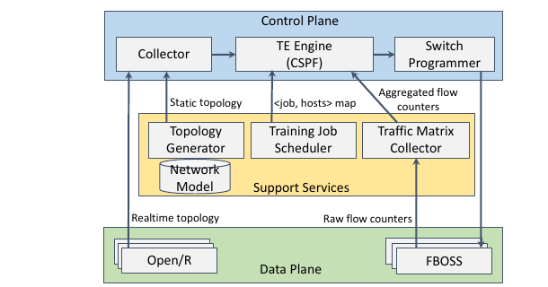
元件 C：把 congestion admission 上移到 collective library
Meta 不是聲稱 PFC 本身已成為完整 congestion control，而是利用既有 two-stage copy / receiver-initiated NCCL data path：channel 數與 buffer 大小共同限制可同時注入的 bytes，receiver 消耗完才發下一個 CTS。switch 再把 CTS/ACK 放較高優先 queue，避免控制封包在壅塞中飢餓。底層仍以 PFC 保持 lossless、CTSW deep buffer 吸收 ephemeral burst；罕見 drop 用 go-back-N retransmit，LAT 需另行調校。§5.1–5.2.1 · PDF p.8§5.2.2–5.2.3 · PDF p.9 · Fig. 14
{kind=link}
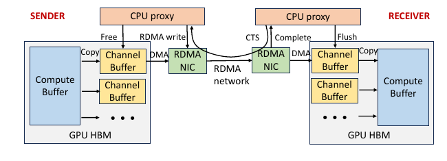
元件 D：network–collective co-tuning
production RTT 約 22 µs，而 NCCL developer assumptions 小於 10 µs。Meta 因此一起調整 channel/message size、Tree/Ring/Rail-based AlltoAll 選擇、LL/LL128/Simple protocol 轉換點、CTS/ACK QoS、CTSW VOQ credit、NIC PCIe credits、relaxed ordering 與 topology-aware rank assignment。這些設定不是獨立 knobs：增大 channel buffer 可增加 bandwidth utilization，卻也擴大 congestion spreading 與 GPU thread/resource 競爭。§6.1 · PDF p.10 · Fig. 15§6.1 · PDF p.11
元件 E：把 slow job 變成可定位事件
Job-facing RoCET 彙整 switch、NIC、PCIe switch 與 GPU counters：Out-of-Sequence（OOS）揭露未被其他層回報的 drop/NIC bug，link flap 找硬軟體抖動，Local ACK Timeout（LAT）對應 QP sender timeout。Operator 端再用 >200 ms PFC watchdog、RTSW buffer >80% alarm、congestion-drop 與 reachability 檢查執行自動緩解。§6.3 · PDF p.11
分析 Topology 先減少必須穿越的昂貴 cut；routing 把長流平均到可用 paths；receiver admission 限制同時到達的 burst；co-tuning 讓 control/data message 適配真實 RTT；observability 則處理任何 model 無法預見的 failure。五層共同回答 R1–R6，不能把其中一個 benchmark gain 當成整套 production fabric 的唯一原因。
路徑不均衡：Max–Mean Ratio
\(c_\ell\) 是 link \(\ell\) 上的 flow count，\(L\) 是等價 links。MMR = 1 代表完全均衡；越高表示最忙 link 相對平均越嚴重。論文以「同一 collective 內多數 flow 大小相近」為前提，用 flow count 近似 load；在 16 links、1,000 flows 的 ECMP simulation 中平均 MMR >1.2。
QP/channel 數只增加可 hash 的選項
Table 1 以 \(M\) 表 NCCL channels、\(N\) 表每 host 的 RDMA NICs，描述每 NIC 可見的相對 flow entropy。AlltoAll full mesh 可同時利用 NIC 與 channels；Ring/Tree 類 hierarchical collective 的 destination pairs 稀疏，主要只由 channels 增熵。因此 LLM 使用 QP scaling factor 16，而 Ranking 只用 4。
§2.2 · PDF p.2 · Table 1§4.2.3 · PDF p.6 · Fig. 8
Receiver admission 的容量直覺
分析 論文沒有提供 end-to-end iteration-time 公式，也未把 normalized BusBW 映射成模型收斂時間。後續只能說 routing/transport 改善 collective communication；不能據此推導固定的訓練加速比。
方法看似合理，真正的問題是：實驗有沒有把這條因果鏈撐起來？
路由、壅塞與 Co-tuning：六組主張逐項驗證
證據不是同一種實驗
| 層級 | 設定 | 能回答 | 主要限制 |
|---|---|---|---|
| Production trace | Chakra 蒐集 2023Q4 約 30K 隨機 training jobs；Figure 1–2、Table 2 | collective type、job size、QP、buffer occupancy 的真實分布 | 排除 >128-GPU long tail，明確不含 LLM jobs |
| Flow-level simulation | production job placement；E-ECMP QP=4/32 對 TE | 理想 capacity 與 link failure 下 routing 上界 | traffic model、simulator calibration 與完整分布未提供 |
| Controlled collective benchmark | NCCL/nccl-tests；32／128 GPU、16 uplinks 或 200G/400G 子系統 | QP scaling、TE、ECN/DCQCN、flowlet、co-tuning 的局部機制 | 不同圖使用不同平台；軟體/firmware 版本與重複統計多未提供 |
| Production longitudinal | 一個 ZionEX 200G AI Zone，四階段、數萬 jobs、跨年 | routing/topology 演進能否長期維持 BusBW | 同時有年代、job mix、software 與容量變化，非嚴格因果消融 |
| Incident reports | switch image regression；buffer assumption × firmware × burst × H100 | 操作面 failure modes 與可觀測性需求 | 個案，無發生率／平均修復時間統計 |
§2.3 · PDF p.3§4.4 · PDF p.7§6.2–6.3 · PDF p.11§6.4 · PDF p.12
Claim–test 配對
| 主張 | 測試與控制 | Metric / observation | 不能推論 |
|---|---|---|---|
| C1：提高 entropy 可修正 ECMP collision | AllReduce，同 message size；QP=1 對 split/round-robin QP=4/16，switch 加 destination-QP hash | Normalized bandwidth；最高 +40% | 未映射到 full training step，也沒有 error bars |
| C2：TE 比機率 hash 更均衡 | 128-GPU AlltoAll/AllReduce、16 uplinks；TE 對 E-ECMP | 40–90% vs uniform 80% link utilization；BusBW +5–10% | 多 link failures 或 DC-scale 控制成本下不一定勝 |
| C3：DCQCN 難兼顧 CCT 與 PFC | 32-GPU AllReduce ECN threshold；128-GPU AlltoAll 多組 DCQCN | Tight threshold CCT 約 +5%；最佳調參 CCT 約 −3% 但 PFC 2–3× | 未和其他 modern CC 做同平台比較 |
| C4：receiver admission 抑制 incast | 400G、16:1、五分鐘、同 traffic volume；Perftest 對 recurring NCCL Gather | Table 3 三段 PFC：Perftest 非零，Gather 皆 0 | 兩個 generators 的 burst shape/implementation 不完全相同 |
| C5：co-tuning 適配真實 fabric | Out-of-box、collective-only、network+collective；AlltoAll/AllReduce 多 message sizes | Normalized BusBW；作者稱多個 case >2× | 圖未給 cluster/GPU/software 完整設定與 training time |
| C6：routing 可替代永久 overbuild | 同一 200G AI Zone 四個歷史 stages | Normalized AllReduce BusBW 分布；Stage 4 收回 CTSW 仍無負面 | 歷史 observational data 無法排除 workload/stack 演進 |
硬體與軟體資訊缺口
ZionEX 為 NVIDIA A100 世代、Grand Teton 為 H100 世代；Grand Teton 每 host 8 GPUs、8×400G RNIC。論文使用 NCCL、RoCEv2、Open/R、FBOSS、BGP、PFC 與不同 NIC firmware，但沒有為每張結果圖列出 CPU、記憶體、NIC/switch 型號、driver/CUDA/NCCL/firmware 版本、run repetitions、warm-up 或統計信賴區間。這使微觀數值難以原樣重現。§3.1 · PDF p.4§4.3 · PDF p.6§5.1–5.2 · PDF p.8
QP-aware routing 能否修正 low entropy？
測試：AllReduce benchmark 在相同 collective size 下比較 out-of-box QP=1、QP=4/16 的 split 與 round-robin；switch 用 E-ECMP 額外 hash destination QP。觀察：正文報告相對 baseline ECMP without QP scaling 最高 40% performance improvement；Figure 7 顯示較大 messages 時 round-robin QP=4/16 接近 90–100% normalized bandwidth，而 QP=1 明顯較低。支持：更多可辨識 flows 可減少持續碰撞。限制：圖沒有 error bars、完整 testbed 或 end-to-end step time。§4.2.2–4.2.4 · PDF p.6 · Fig. 7
實驗事實 QP 數並非越多越好：Ranking full-mesh traffic 已有較高 entropy，production 採 factor 4；LLM hierarchical collectives 採 16。Split-message 方法會造成更小 network messages 與多 ACK，本文 workload 下 round-robin posting 較好。§4.2.3–4.2.4 · PDF p.6 · Figs. 7–8
{kind=link}
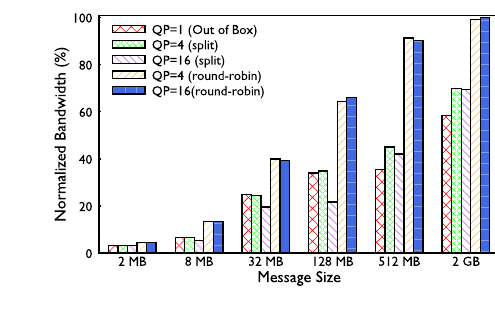
Demand-aware TE 是否優於 E-ECMP？
- Simulation：production placement、非最佳 scheduling 下，E-ECMP QP=4 的平均 completion time 比 roofline 長 40%；提高至 QP=32 後，worst case roofline utilization 從 20% 升到 52%，但多數 jobs 仍不到 roofline。TE 在 network capacity 足夠時可達 100% utilization；若 failures 使 link availability 低於 1:1 subscription，E-ECMP 可能反勝。§4.4.1 · PDF p.7
- Controlled benchmark：128-GPU、16-uplink 的 real-world NCCL benchmark 中，E-ECMP links 使用率 40–90%，TE 約均勻 80%；AllReduce/AlltoAll BusBW 高 5–10%。§4.4.2 · PDF p.7 · Fig. 10
- Production decision：TE 用於多數 ranking AI Zones，E-ECMP 是 failure backup；但 multiple-link failure 比 simulation 預期常見，加上 DC-scale ATSW path diversity 與控制成本，Meta 選 E-ECMP 作 DC-scale 主方案。§4.4.3 · PDF p.7
分析 TE 的 5–10% benchmark 優勢與未被全域採用並不矛盾：它最佳化 steady-state utilization，但 production 目標還包含 failure fallback、控制面複雜度與 operator burden。這篇 paper 的「最佳」是 multi-objective operational choice，不只是一條 performance curve。
{kind=link}
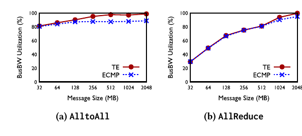
為何不把 DCQCN 當主要答案？
32-GPU AllReduce：將 CTSW ECN threshold 從 baseline low/high 都 5 MB 收緊為 300/600 KB，collective completion time 在示例中約惡化 5%；作者另稱更嚴重 corner cases 沒有分享資料。128-GPU AlltoAll：放鬆的一些 DCQCN 組合最多只改善約 3% CCT，卻使 PFC 指標惡化 2–3×。因此 200G 保留 relaxed 5 MB ECN/default DCQCN；400G 因 default performance degradation、firmware change/bug 與 CNP visibility 問題，deployment 最終不啟用 DCQCN。§5.2.1 · PDF p.8 · Fig. 12§5.2.1 · PDF p.9 · Fig. 13
作者主張 截至論文撰寫，400G production 已有一年以上只靠 PFC flow control、沒有 transport-level congestion control，但仍使用 collective-layer controls；作者稱 performance 穩定且沒有 persistent congestion。這是 production observation，沒有同期 DCQCN A/B 或 raw time series。§5.2.1 · PDF p.9
{kind=link}
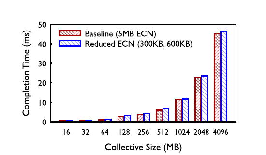
{kind=link}
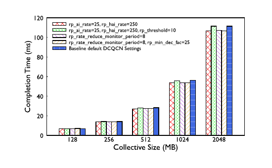
Receiver-driven admission 是否真的壓住 incast？
測試：400G network、16:1 incast、相同 traffic volume，各跑五分鐘；比較 continuous streaming Perftest 與 recurring NCCL Gather。Gather 雖非常用 production collective，作者選它是因為在 collective 中產生最嚴重 incast。觀察：
| PFC 方向 | Perftest | Gather |
|---|---|---|
| Downstream RTSW → CTSW | 350K/s | 0 |
| CTSW → Upstream RTSW | 183K/s | 0 |
| Upstream RTSW → Sender NIC | 10% duration | 0 |
另把 Gather receiver bandwidth 限成 25% 時，receiver NIC 對 RTSW 發出 75% TX pause duration，但 RTSW 吸收，沒有把 backpressure 推到 CTSW。這支持「CTS + channel window 能隨 receiver throughput 控制注入」；但 Perftest/Gather 的 sender behavior 不只差一個 admission flag，因果仍限於這兩種 traffic generator。§5.2.2 · PDF p.9 · Fig. 14 & Table 3
Co-tuning 帶來多少差距？
Figure 15 在 AlltoAll/AllReduce、16 MB–4 GB collective sizes 比較 out-of-box、collective-only tuned、network+collective co-tuned normalized bandwidth。作者稱多個案例超過 2× out-of-box，圖上小／中 message 差距尤其大。具體機制證據包括：
- 將 CTS/ACK 置於較高 QoS 後，sender 等 rendezvous messages 的延遲從 P90 43 µs 降到 4 µs。§6.1 · PDF p.10
- 調整 CTSW VOQ egress→ingress credit allocation，在 latency-sensitive hierarchical collectives 的 small sizes 最高改善 15%。§6.1 · PDF p.10
- 較大的 message/channel buffer、延後 Tree/Rail-based AlltoAll 與 LL128 的切換點，減少 CTS/completion 次數並填滿 22 µs RTT fabric。
實驗事實 Figure 15 直接支持 communication BusBW 改善；43→4 µs 與 15% 是正文報告的局部 measurements。論文沒有把這些改進合成模型 training throughput、time-to-train 或收斂品質結果。§6.1 · PDF p.10 · Fig. 15
{kind=link}
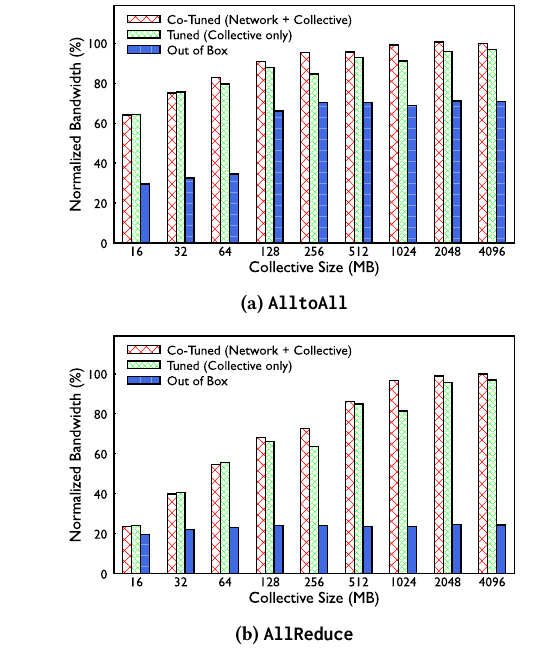
多年 production evolution 是否支持設計？
Figure 16 聚合一個 200G ZionEX AI Zone、跨年數萬 jobs 的 normalized AllReduce BusBW：
- Stage 1：1:1 subscription、static routing、collision，分布低且寬。
- Stage 2：paper 所稱 1:2 under-subscription，以 2× network infrastructure 消除 performance impact。
- Stage 3：維持 1:2 並導入 TE，中位 performance 類似 Stage 2，但分布更緊。
- Stage 4：收回 CTSW hardware 至 1:1.125，保留最多兩條 link failure 緩衝，作者報告沒有 performance loss。
{kind=link}
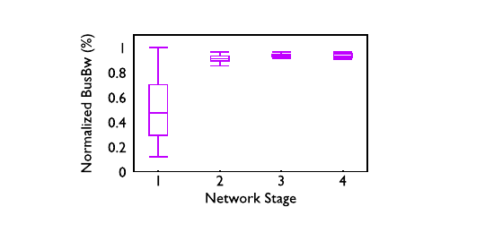
分析 這是最貼近「production works」的長期證據，也最難做純因果解讀：各 stage 發生於不同時間，job mix、collective library、firmware 與 failure state 可能一併改變。它支持可營運性與一致性趨勢，不等價於 controlled ablation。
規模與穩定度主張：單獨列示
作者主張 作者稱四年 production AI traffic 中，即使關閉 DCQCN、RTSW 多次對 deep-buffer CTSW 發 PFC，也未遇 CTSW 持續向 RTSW 發 PFC；RTSW buffer 監控亦從未超過 80% alarm threshold。這些 observation 沒有事件總數、分母、tail duration 或跨 cluster raw distribution，不能作為「PFC-only 普遍安全」的實驗定理。§5.3 · PDF p.10§6.3.2 · PDF p.11
已測的設計敏感度
| 變因 | 範圍／對照 | 結果 | 決策 |
|---|---|---|---|
| QP factor / mapping | 1、4、16；split vs round-robin | 大 message 下 round-robin 明顯較佳；Ranking/LLM entropy 需求不同 | Ranking=4，LLM=16；switch hash destination QP |
| TE vs QP scaling | E-ECMP QP 4→32；TE；capacity/failure | QP32 改善但多數未到 roofline；TE capacity 足時100%，failure 可反勝 | TE ranking Zones；E-ECMP DC-scale/fallback |
| Flowlet interval | 128、175、200、256、512 µs | 256–512 µs 的 out-of-order <1 packet/s；200G AlltoAll 在256/512間 performance 差異不顯著 | 初測可近 TE，尚未完成 production rollout |
| ECN/DCQCN | 5 MB vs 300/600 KB；多組 rate parameters | Tight threshold CCT 約+5%；best relaxed CCT 約−3%但 PFC 2–3× | 400G 不用 DCQCN，以 collective admission 取代 |
| Receiver speed | Gather receiver 100%→25% | receiver NIC pause 75%，RTSW 吸收且不向 CTSW傳播 | 以 ready channels 適應慢 receiver |
| Fabric capacity | Stage 1:1、paper-defined 1:2、1:1.125 | overbuild 提升後 TE 可收回多數額外 CTSW，維持分布 | 保留兩條 link failure headroom |
§4.2 · PDF p.6 · Figs. 7–8§4.4–4.5 · PDF p.7 · Figs. 10–11§5.2.1 · PDF p.8 · Fig. 12§5.2 · PDF p.9 · Fig. 13 & Table 3§6.2 · PDF p.11 · Fig. 16
分析 論文沒有在同一 cluster、同一 workload、同一時間依序拆掉 topology-aware placement、QP-aware routing、receiver admission、deep buffer、PFC、QoS 與 collective tuning；Figure 15 也只分成 out-of-box／collective-only／co-tuned 三組。因此無法把整體 improvement 精確歸因到每個元件，亦沒有通用的 parameter-selection algorithm。
數據回答了部分問題；剩下的是適用邊界與仍未被證明的部分。
Production Evolution 能證明什麼，哪些仍只是觀察性證據
優點
- 由 workload 推導網路：先以 collective/QP/buffer trace 說明 traffic entropy 與 burst，再設計 topology、routing、transport，因果鏈完整。
- 不掩飾演進失敗：path pinning、昂貴 overbuild、TE failure cases、DCQCN tuning/firmware 問題都被保留，提供 production decision 的真實 multi-objective 脈絡。
- 跨層控制：job scheduler、NCCL、RNIC、switch queue/credit、routing controller 與 observability 串在同一 data path，而非只調單一 protocol。
- 多種證據互補：simulation 解釋上界，microbenchmark 隔離機制，長期 production distribution 與 incidents 驗證可營運性。
限制與外部有效性
- Traffic trace 不含 LLM long tail：約 30K jobs 明確排除 >128 GPU、因此排除 LLM jobs；作者以 multidimensional parallelism 說明 16–128 GPU collective 仍相關，但無法代表 16K-GPU job 的跨 Zone coordination 全貌。§2.3 · PDF p.3
- 不是端到端 training evaluation：主指標是 CCT/normalized BusBW/PFC；沒有 iteration time、MFU、time-to-train、job completion time 或模型品質。
- 重現資訊不足：多數圖缺完整 CPU/NIC/switch SKU、driver/CUDA/NCCL/firmware、run count、variance、warm-up 與 raw data。
- 跨圖不可直接相加：32-GPU、128-GPU、200G、400G、simulation 與歷史 production 各回答不同 claim；40%、10%、2× 不能合成總加速。
- DCQCN 比較有限：只掃一些 DCQCN/ECN 設定，未同平台比較 HPCC 等其他 congestion-control algorithms；firmware bug 也混入架構判斷。
- Flowlet 尚非已證 production：Figure 11 是 initial testing，作者明說 future rollout 取決於 early deployment signals。
- 成本未量化：只指出 overbuild 要 2× network infrastructure；沒有 TCO、功耗、cabling、ATSW optics 或 operator-hours 分析。
部署風險
| 風險 | 觸發條件 | 本文緩解 | 仍未解 |
|---|---|---|---|
| PFC HoL / deadlock | persistent backpressure、bad NIC 長時間 pause | receiver admission、deep CTSW buffer、>200ms watchdog | 形式化 deadlock freedom、multi-tenant fairness 未提供 |
| Control-message starvation | CTS/ACK 和 data 共用擁塞路徑 | 高優先 QoS/DSCP，P90 43→4 µs | priority interaction、starvation of other classes 未評 |
| TE stale state / failure | 30 s recompute 遇 µs burst 或 multiple-link failures | BGP/E-ECMP fallback；DC-scale不用 TE | 切換瞬間與 consistency 收斂未量化 |
| Configuration coupling | GPU、firmware、buffer、job pattern 同時變更 | baseline、synthetic traffic、library instrumentation、alerts | config search/rollout 仍人工且容易 corner case |
| Hardware/vendor variation | 不同 RNIC firmware、VOQ、400G/更快世代 | inbox driver、vendor collaboration、co-tuning | open Ethernet 不等於行為可攜；跨 vendor 結果未示 |
分析 「不用 transport-level CC」只適用於這個完整組合：dedicated lossless backend、可控 job/collective library、receiver-gated traffic、deep buffers、PFC 與成熟監控。若 endpoint 不能被共同控制、混合任意 traffic、buffer 淺、RTT/BDP 或 GPU:network throughput 比例不同，結論必須重新驗證。
這套共同設計還留下哪些研究問題
可重用的設計原則
- 先把不平衡拆成空間與時間兩種：low-entropy 5-tuples 造成空間上的 persistent path collision，應靠 QP entropy、placement 或 demand-aware routing；collective barrier 造成時間上的 microburst，應靠 admission、buffer 與 feedback window。混成單一「congestion」問題，會讓參數調整互相傷害。
- 把控制放到看得見因果的層：NCCL 知道 receiver 是否有 buffer，因而可在 sender 注入前阻止 incast；switch 只看到 queue 形成後的結果。這不是否定 transport，而是用語意更完整的上層縮小 transport 必須處理的狀態空間。
- 最佳化目標必須包含 failure 與操作成本：TE 在理想 capacity 下達到較均勻 utilization，但 E-ECMP 的 stateless fallback 與 DC-scale simplicity 可能有更高 production value。單次 benchmark 的 peak 不是 deployment winner。
- 標準 topology 仍可 co-design：不必先發明新 fabric；rank placement、rail alignment、QP mapping、collective algorithm、QoS 與 buffer credit 已能把 Clos 的可用能力釋放出來。
值得補做的實驗
| 實驗 | 最小控制 | 應量測 | 能關閉的疑問 |
|---|---|---|---|
| 同平台 factorial ablation | 固定 H100 cluster/job placement；逐一切換 QP scaling、TE、CTS、deep buffer、PFC、QoS | step time、BusBW、link skew、queue/PFC tails、failure recovery | 把 2×/40%/10% 等局部收益分配到元件與交互作用 |
| 完整 LLM job trace/replay | 包含 >128 GPU、跨 Zone、不同 parallelism dimensions | per-collective critical path、cross-zone bytes、tail iteration time | 30K trace 排除 LLM long tail 的外部有效性缺口 |
| End-to-end training A/B | 固定 model、tokens、GPU count、software/firmware | MFU、iteration/JCT、time-to-train、recovery time、quality parity | communication metric 是否真正轉成訓練成果 |
| Hybrid routing state machine | 相同 topology 注入多 link failures、stale telemetry、controller partition | TE↔E-ECMP↔flowlet switch time、packet reordering、tail CCT | 何時應犧牲理想 utilization 換可靠性 |
| Transport/admission comparison | 同一 burst trace 比 DCQCN、其他 CC、CTS-only 與組合 | PFC duration、queue occupancy、goodput、fairness、deadlock events | 400G 關閉 DCQCN 是原理優勢或特定 firmware/參數結果 |
| Mixed-tenant safety | 共同 fabric 放 collective、storage、latency traffic 與 slow/bad receiver | 隔離、HoL、priority starvation、租戶公平性 | PFC-only 在非 dedicated/fully controlled 環境的適用邊界 |
| 自動化 co-tuning | 跨 GPU/NIC/firmware/RTT 變更，以 canary + rollback 搜尋 | performance、incident rate、operator-hours、收斂速度 | 人工跨層調參是否可規模化與安全升級 |
推測 若未來 GPU injection rate 成長快於 per-port network/buffer，或 cluster 開始混合不可控 endpoints，PFC-only + receiver admission 的穩定區間可能縮小，transport-level CC 的 break-even 會重新移動。這是由本文「GPU-to-network throughput ratio 需整體考量」延伸的假說，不是論文已驗證結果。§5.3 · PDF p.10
- PFC-only 的結論能移植到哪裡？
為何重要：本文成功經驗同時依賴 dedicated backend、deep buffers、receiver-gated NCCL 與成熟 watchdog。討論時應明確列出少一個前提會出現哪種 failure mode，而不是把「一年穩定」當成 RoCE 的普遍性質。 - 排除 >128-GPU LLM jobs 的 trace，足以支持 16K-GPU training 嗎？
為何重要：作者以 multidimensional parallelism 說明小 group collective 仍代表關鍵 traffic，但跨 group／跨 Zone synchronization 可能改變 entropy、burst 與 tail。需要哪些 trace 或 replay 才能補上？ - TE、E-ECMP 與 flowlet 應如何形成可證安全的 hybrid policy？
為何重要：TE 的 steady-state bandwidth 較好，E-ECMP failure robustness 較高，flowlet 介於兩者；真正系統問題是偵測、切換與 rollback，而不是只選一條曲線。 - 5–10% BusBW、40% QP improvement 與 >2× co-tuning，會轉成多少 time-to-train？
為何重要：不同數字來自不同 testbeds/claims，不能相乘；模型 step 中 compute overlap、critical collective 與 straggler 決定實際價值。 - 跨層 co-tuning 能否自動化而不放大 incident blast radius？
為何重要：switch image、firmware、buffer assumption 與 H100 burst 的案例顯示局部「最佳」可能在組合後失效；需要什麼 invariant、canary、telemetry 與 regression suite？
拓撲、指標、部署階段與證據索引
| 正式標題 | RDMA over Ethernet for Distributed AI Training at Meta Scale |
|---|---|
| 作者 | Adithya Gangidi、Rui Miao、Shengbao Zheng、Sai Jayesh Bondu、Guilherme Goes、Hany Morsy、Rohit Puri、Mohammad Riftadi、Ashmitha Jeevaraj Shetty、Jingyi Yang、Shuqiang Zhang、Mikel Jimenez Fernandez、Shashidhar Gandham、Hongyi Zeng |
| 機構 | Meta |
| 會議 | ACM SIGCOMM ’24，2024 年 8 月 4–8 日，Sydney, NSW, Australia |
| DOI | 10.1145/3651890.3672233 |
| 篇幅 | 共 14 頁 |
| 本閱讀分類 | AI Infrastructure / Cluster Networking |
分析 分類重點不是單一 DCQCN 或 RDMA protocol，而是把訓練 workload 轉譯成整個 cluster fabric 的 topology、routing、transport、collective library 與 operations 設計。因此歸入 Cluster Networking；RoCE 是承載這套跨層系統的傳輸語意。Abstract & §1 · PDF p.1§1–2 · PDF p.2
術語表
- RDMA
- Remote Direct Memory Access；RNIC 直接在遠端記憶體讀寫，繞過遠端 CPU data path。
- RoCEv2
- RDMA over Converged Ethernet v2；把 RDMA transport 放在 routable UDP/IP Ethernet 上。
- RNIC
- 支援 RDMA 的 network interface card；Grand Teton 是每 GPU 對一個 400G RNIC。
- QP
- Queue Pair，RDMA sender/receiver 的通訊端點；本文增加 QP 並把 destination QP 納入 switch hash，以增加 path entropy。
- Collective
- 多 ranks 共同參與的通訊，如 AllReduce、AlltoAll(v)、AllGather、ReduceScatter。
- Rail
- 此閱讀中指同 index GPU/RNIC 沿 cluster topology 形成的 lane；paper 提到 rail-based collective，但未提供通用 rail algorithm 定義。
- FE / BE
- Frontend / Backend network；FE 處理資料載入、checkpoint、logs，BE 是專用 RoCE collective fabric。
- RTSW / CTSW / ATSW
- Rack、Cluster、Aggregation tier switches；RTSW–CTSW 組成 AI Zone Clos，ATSW 連接多 Zones。
- ECMP / E-ECMP
- Equal-Cost Multi-Path 以 hash 選路；本文 E-ECMP 再納入 destination QP，增加相同 host pair 的可分流 flows。
- TE / CSPF
- Traffic Engineering / Constrained Shortest Path First；central controller 依 topology、job placement 與 traffic matrix 計算 exact-match paths。
- PFC
- Priority Flow Control，對指定 priority 暫停上游傳送以避免 loss；可能產生 head-of-line blocking 或 backpressure propagation。
- ECN / CNP / DCQCN
- Switch 以 ECN 標記 congestion，receiver 回 CNP，DCQCN sender 據此降速。
- CTS
- Clear To Send；receiver 準備好 channel buffer 後授權 sender 執行 RDMA write。
- HoL
- Head-of-Line blocking；隊首被阻擋時，同 queue 其他 traffic 也無法前進。
- OOS / LAT
- Out-of-Sequence packet / Locally Acknowledged Timeout；RoCE telemetry 用來定位 reordering、drop 或 ACK/NACK 問題。
- MMR
- Max-to-Mean Ratio，最忙 link 的 flow count 除以平均；1 代表完全均勻。
- BusBW
- NCCL bus bandwidth，以 collective algorithm 對可用 fabric bandwidth 的利用作正規化觀察；不是 model training throughput。
重點來源索引
- Title、Abstract、metadata——正式標題、作者、SIGCOMM 2024、DOI 與全篇貢獻概述。PDF p.1。
- §1 Introduction——多 cluster/數千 GPUs、RoCE backend 分離、up to 32K GPUs、Llama 3 operational context。PDF p.2。
- §2、Figures 1–2——約 30K jobs 的 collective/job-size trace、排除 >128-GPU LLM long tail、collective traffic。PDF p.3。
- Table 1–2、Figures 3–4、§3.1——traffic pattern/QP/buffer occupancy 與 Grand Teton 8 GPU/8×400G RNIC。PDF p.4。
- §3.2–4.2、Figures 5–6——FE/BE、AI Zone Clos、ATSW、placement、ECMP collision、MMR、path pinning/overbuild。PDF p.5。
- §4.2–4.3、Figures 7–9——QP scaling/mapping、E-ECMP、central TE inputs/CSPF/switch programming。PDF p.6。
- §4.4–4.5、Figures 10–11——TE/E-ECMP simulation 與 128-GPU benchmark、deployment decision、flowlet interval。PDF p.7。
- §5.1–5.2、Figure 12——PFC/ECN/DCQCN data path、tight threshold 的 AllReduce regression。PDF p.8。
- §5.2、Figures 13–14、Table 3——DCQCN trade-off、400G decision、receiver CTS admission 與 16:1 incast。PDF p.9。
- §5.3–6.1、Figure 15——PFC-only design reasoning、22 µs RTT、QoS/channel/protocol/VOQ co-tuning。PDF p.10。
- §6.2–6.3、Figure 16——200G AI Zone 四階段 production evolution、RoCET/alert/watchdog。PDF p.11。
- §6.4、§7 Related Work、§8 Conclusion——switch/firmware/buffer incidents、先前 RoCE/CC/topology/collective 工作與結論。PDF p.12。
分析 查 workload 是否代表 LLM 看來源 03–04；查 topology/rail/routing 看 05–07；查 transport 與 receiver admission 看 08–09；查 co-tuning、production stability 與 incident evidence 看 10–12。